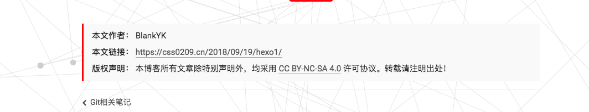

为什么改用hexo了？而不是WordPress(wp)
喜欢上hexo
实际上我觉得wp写文章更舒服写，不过，我还是觉得hexo好😂，就我个人而言的话，有一下几点比较吸引我
- 自定义强，样式，脚本，页面，随便爆改，只要你有能力，同一个主题，不同的感觉，我觉得吧，学编程嘛，有时候就得爱折腾
- 代码易看懂，只要学过
html,css,js应该都看的懂大部分代码吧，爆改属性增加 - 使用markdown写文章，我其实接触MarkDown并不深，但是，我还是挺喜欢的❤️
- 静态页面
- 其他大佬都在用（我也假装一波😏）
有的人可能还会说部署到GitHub，不需要服务器方便，不过，我还是想部署到自己服务器上，所以在服务器部署上相对于wp要差一些，
但是在GitHub上就很简单了
那个Git-hook什么的现在都还没怎么懂，反正还是不安全的暴力的上传上去了
讨厌wp
wp的话和hexo比起来就有种特别庞大的感觉，以下几点我不太喜欢
- 构成复杂，不易自定义，毕竟使用PHP+MySQL搭建的，主题的文件也很大，反正我是不愿意去看
- 很难找简约的主题，并不是找不到，是不好找，我是个喜欢简约风格的人，这点很不舒服，这里朋友Bamboo Sticks给了我一个
主题：Daily - 一报错就懵逼，我不了解这个网站的结构，不知道怎么构成的，它报个错误，我怎么知道什么情况
其他的我就不说了，直接说这几天折腾了什么吧
搭建
搭建的过程就不想多说了，用hexo的都是会玩的人，
会玩的都跑去看官方文档，谁还来看我这小破站哟🙄
本文就直接写搭建后的美化啊，部署什么的
部署到服务器
我看了不少文章，但是总是有什么权限之类的问题，要不然创建的git账号无法访问，要不然宝塔的www账号无法访问，最后自己还是按照那个意思上传上去了，
不过这样是 不安全的! 不安全的! 不安全的!
服务器上操作
我的服务器环境：
使用宝塔面板搭建的网站
1 | screenfetch |
1 | # 先找到服务器上宝塔存网站的位置 |
接下来输入一下内容：
1 | GIT_REPO=/www/wwwroot/blogName/hexo.git |
保存退出后：执行chmod +x /data/GitLibrary/hexo.git/hooks/post-receive
赋予执行权限
本地操作
在最后找到deploy，修改如下：
1 | # Deployment |
生成静态文件
1 | hexo generate |
可简写为
1 | hexo g |
| 选项 | 描述 |
|---|---|
| -d,–deploy | 文件生成后立即部署 |
| -w,–watch | 监视文件变动 |
启动服务器
访问网址为：http://localhost:4000/
1 | hexo s |
| 选项 | 描述 |
|---|---|
| -p,–port | 重设端口 |
| -s,–static | 只使用静态文件 |
| -l,–log | 启动日志，使用覆盖记录格式 |
清除缓存
hexo clean
使用gulp压缩代码
参考：WDC’s Blog
安装这个东西我之前一直报错，最后发现是版本的问题，网上大部分都是3.x的版本，而我用的是4.0的版本
最后我找到了参考博客给出的完整的安装
还有就是xxx.js和xxx.min.js
安装gulp
博客目录下使用 npm install xxx --save命令安装如下工具
1 | npm install gulp@next # gulp4.0 因为 gulp-debug 需要 gulp 版本大于等于 4.0 |
建立gulpfile.js 文件 在Hexo的根目录建立gulpfile.js
1 | var gulp = require('gulp'); |
压缩生成代码
使用hexo g && gulp压缩生成代码
生成的代码会在public文件夹下
优化篇
安装NexT主题
这个其实NexT官方文档也有，我这里只说安装过程
1 | cd your-hexo-site |
然后到你的站点文件夹/_config.yml文件找到theme修改如下
1 | # Extensions |
NexT的主题切换
搜索关键词：scheme
这里有4个主题，自己试吧
要用的主题直接去掉前面的#号即可
1 | # --------------------------------------------------------------- |
语言切换
参考： Bamboo Sticks
关键字：language
这里要注意一下，很多都写的是zh-Hans,甚至是这个我也不知道是不是官方文档的网站
实际上在NexT6.0后中文变成了zh-CN
打开文章版权信息
搜索关键字post_copyright
将enable修改为true
如果想修改，可以找到themes/next/layout/_macro/post-copyright.swig修改
效果：

打开字数统计
首先博客目录下执行命令
1 | npm install hexo-symbols-count-time --save |
然后在hexo的_config.yml中修改：
修改此文件需要重启服务
1 | # 字数统计 |
在next的_config.yml中修改
修改此文件不需要重启，只需刷新
1 | # Post wordcount display settings |
开启动态背景
关键字：canvas_nest
根据自己的需要开启
1 | # Canvas-nest |
2D背景安装
在博客根目录下进行以下操作
1 | cd themes/next |
3D背景安装
在博客根目录下进行以下操作
1 | cd themes/next |
关闭Google字体
国内访问的话由于谷歌字体无法加载，会在那加载半天打不开
关键字:font
将enable后面改为false即可，或者修改为其他国内可访问的资源
设置sitemap
参考: hoxis
安装插件
在blog目录下执行
1 | npm install hexo-generator-sitemap --save |
修改配置文件
在hexo的_config.yml中添加：
1 | # sitemap |
安装完成后执行hexo g即可在public目录下生成sitemap.xml文件和baidusitemap.xml
robots协议
爬虫协议
在source目录下新建robots.txt文件，内容为：
1 | User-agent: * |
具体的seo优化请看参考的博客
开启打赏
next下_config.yml
关键字：Reward
修改如下：
1 | # Reward |
favicon
关键字：favicon
1 | favicon: |
RSS
安装插件
1 | npm install hexo-generator-feed --save |
在博客目录下的_config.yml添加
1 | # rss |
在主题目录下_config.yml找到关键字：rss
修改为：rss: /atom.xml
侧边栏
导航，菜单
关键字: menu
1 | menu: |
这里的home什么的可以在language文件夹下对应语言中修改/about/是指页面所在文件夹|| 后面 是图标的名字，NexT的图标名字可以从Font Awesome找找到
社交链接
关键字: social
1 | social: |
改法和菜单导航差不多
友情链接
关键字:links
修改格式为：
1 | links: |
头像
关键字： avatarurl后面改为你的头像的地址
颜色修改
首先我要说一下，对于这块具体我不是很清楚，但是我是这样改的
在改颜色之前请打开themes/source/css/_schemes/_varlabes/base.styl
这个文件里面有一些颜色已经定义了，反正你自己看着办吧，我是强迫症
这个Pisces应该是主题的名字，具体我不清楚，我没尝试过
具体修改就太多了，我不想一一叙述，具体的，自己调试
评论系统
这个说来奇怪，其实我当时找的是next统计找到的这个
这里我只提供关键字：valine
具体请参考:为NexT主题添加文章阅读量统计功能
开启评论的话可能会是页面打开稍微慢一丢丢
404页面
参考：SORA
这个404是我参考的别人的
这里要注意的是在HTML页面导入这两个js
1 | <script src="https://cdnjs.cloudflare.com/ajax/libs/jquery/3.1.0/jquery.min.js"></script> |
不然会报错
zsh简化命令
vim ~/.zshrc
添加内容
1 | # hexo清缓存，生成，压缩，部署 |
让markdown支持emoji表情
说白了就是换个markdown的渲染引擎
1 | npm i hexo-renderer-markdown-it --save |
然后进入hexo的_config.yml加入以下内容：
1 | # Markdown-it config |
这里面也有一些其他插件
如果感兴趣可以到hexo-renderer-markdown-it
去了解，反正我是谷歌浏览器翻译着看的🤣